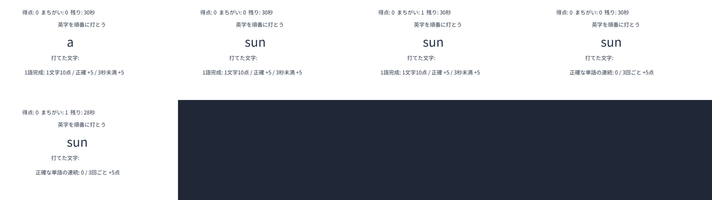
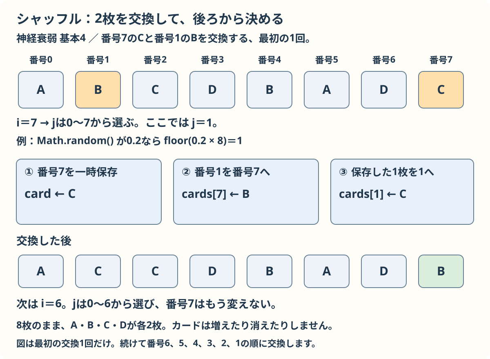
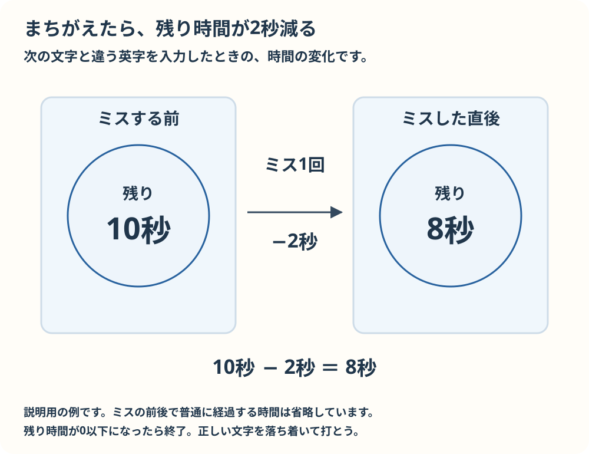

タイピングゲームの発展
基本の完成版から3つの機能を順番に追加します。
始める前に
基本編の完成版から始めます。ZIPを展開してできたフォルダーでindex.htmlを開きます。ZIPには基本編の3ファイルが入っています。
WindowsでZIPを展開する（動画）
自分で作った基本版でも同じ内容なら使えます。
各段階の変更を上から順に作業用の script.js に加えます。変更前と同じ範囲を探して、変更後のコードに置き換えてください。保存したら index.html を開くか、再読み込みします。
ステップ 1：単語を混ぜて出す
このステップの見本を図で見る

このステップの見本
const words = ["a", "cat", "dog", "sun", "fish"];
変わったコードの一例（script.js）const wordList = ["a", "cat", "dog", "sun", "fish"];
見本で確かめること
終了後にRを押して何回か始めると、単語の順番が変わることがあります。
目標
5つの単語を始めるたびに混ぜます。
確認欄までは準備中です。作業を順に進め、確認欄で保存して動作を確かめます。
書く場所と置き換えるコード
単語の配列を用意する
作業用フォルダーの script.js で、次の範囲を探して置き換えます。
置き換える範囲
const words = ["a", "cat", "dog", "sun", "fish"];置き換えるコード
const wordList = ["a", "cat", "dog", "sun", "fish"];
let words = [...wordList];wordList は元の単語一覧、words は出題に使う配列です。[...wordList] は新しい配列にコピーします。
コピーを後ろから混ぜる
作業用フォルダーの script.js で、次の目印を探し、その直後に書きます。
目印
function start() {
書き足すコード
words = [...wordList];
for (let i = words.length - 1; i > 0; i--) {
const j = Math.floor(Math.random() * (i + 1));
const word = words[i];
words[i] = words[j];
words[j] = word;
}
最後の番号 i と、0から i までから選んだ番号 j の単語を交換します。word は一時保存です。i-- で後ろから対象を狭め、5語をそれぞれ1回ずつ出します。元の一覧は変わりません。

図は神経衰弱のカードを混ぜる例です。タイピングでは5語のコピーを i が4から順に混ぜ、word に単語を一時保存して交換します。後ろ側を次の候補から外す流れは同じです。
作成時の重複を外す
作業用フォルダーの script.js で、次の範囲を探して置き換えます。
置き換える範囲
let words = [...wordList];置き換えるコード
let words;start() が毎回コピーを作るので、変数の宣言時にもう一度コピーする必要はありません。
保存後の確かめ方
保存してゲーム画面を更新する（動画）
index.html を再読み込みします。終了後にRを押して何回か始めると、単語の順番が変わることがあります。 この段階の見本を開く
小さな練習
単語を1つ追加し、表示と得点を確かめます。 練習後はコードを元に戻してください。
ステップ 2：連続正解で追加点
このステップの見本を図で見る
3 × 10 + 5 + 0 = 35、2 % 3 = 2
3秒以上なので速さの追加点はなし
3 × 10 + 5 + 5 = 40、3 % 3 = 0
3の倍数の連続成功でさらに5点
ゲーム画面とコードの前後を見る
このステップの見本
この行を足す前 変わったコードの一例（script.js）
if (streak % 3 === 0) score += 5;
見本で確かめること
ミスなしで3語打つと、3語目の得点に連続ボーナス5点が加わります。
目標
間違えずに3語続けると追加点を得られます。
確認欄までは準備中です。作業を順に進め、確認欄で保存して動作を確かめます。
書く場所と置き換えるコード
連続数を覚える
作業用フォルダーの script.js で、次の範囲を探して置き換えます。
置き換える範囲
let wordIndex, position, state, score, mistakes, wordErrors, wordStarted, endTime, seconds;
置き換えるコード
let wordIndex, position, state, score, mistakes, wordErrors, wordStarted, endTime, seconds, streak;
streak はミスなしで完成した単語の連続数です。
連続数を初期化する
作業用フォルダーの script.js で、次の目印を探し、その直後に書きます。
目印
mistakes = 0;
wordErrors = 0;
書き足すコード
streak = 0;
start() は streak も0に戻します。R キーでやり直すときも同じです。
連続数を表示する
作業用フォルダーの script.js で、次の範囲を探して置き換えます。
置き換える範囲
ctx.fillText("1語完成: 1文字10点 / 正確 +5 / 3秒未満 +5", 110, 335);
置き換えるコード
ctx.fillText("正確な単語の連続: " + streak + " / 3回ごと +5点", 160, 335);
案内の文字と streak をつなぎ、3回ごとの追加点を知らせます。
正確な単語を数えて加点する
作業用フォルダーの script.js で、次の範囲を探して置き換えます。
置き換える範囲
if (wordErrors === 0) score += 5;
置き換えるコード
if (wordErrors === 0) {
score += 5;
streak++;
if (streak % 3 === 0) score += 5;
} else {
streak = 0;
}
wordErrors が0なら正確さの5点を加え、streak を1増やします。% 3 は3で割った余りで、3語目、6語目などにさらに5点を加えます。ミスがあれば連続数を0に戻します。
保存後の確かめ方
ミスなしで3語打つと、3語目の得点に連続ボーナス5点が加わります。 この段階の見本を開く
小さな練習
追加点5を10に変えて得点を比べます。 練習後はコードを元に戻してください。
ステップ 3：ミスで残り時間を減らす
このステップの見本を図で見る
このステップの見本
この行を足す前 変わったコードの一例（script.js）
endTime -= 2000;
見本で確かめること
誤った英字を押すと残り時間が2秒減ります。
目標
間違えるたびに残り時間を2秒減らします。
確認欄までは準備中です。作業を順に進め、確認欄で保存して動作を確かめます。
書く場所と置き換えるコード
間違えたら締切を早める
作業用フォルダーの script.js で、次の目印を探し、その直後に書きます。
目印
wordErrors++;
書き足すコード
endTime -= 2000;
seconds = Math.max(0, Math.ceil((endTime - performance.now()) / 1000));
if (seconds === 0) state = "over";
endTime -= 2000 は締切を2000ミリ秒、つまり2秒早めます。残り秒数は0より小さくせず、0なら "over" にします。残り10秒でミスすると、通常の経過時間を除けば8秒になります。

次の文字と違う英字を入力すると、残り時間が2秒減ります。残り10秒でミスした例なら、10−2で8秒です。残り時間が0以下になったら終了します。
ミス前後に普通に経過する時間を省略した例です。出題順や連続正解の追加点はこの図に含めません。
保存後の確かめ方
誤った英字を押すと残り時間が2秒減ります。時間切れ後はRで再開します。 この段階の見本を開く
小さな練習
減らす2000を1000に変え、1回のミスの影響を比べます。 練習後はコードを元に戻してください。